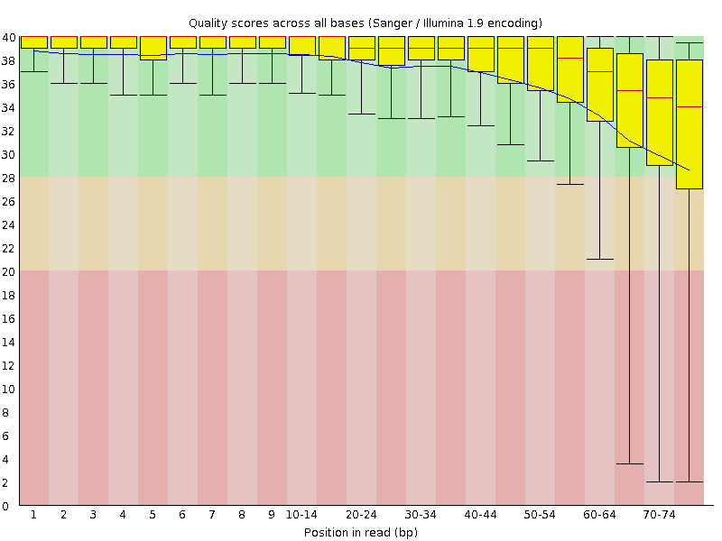
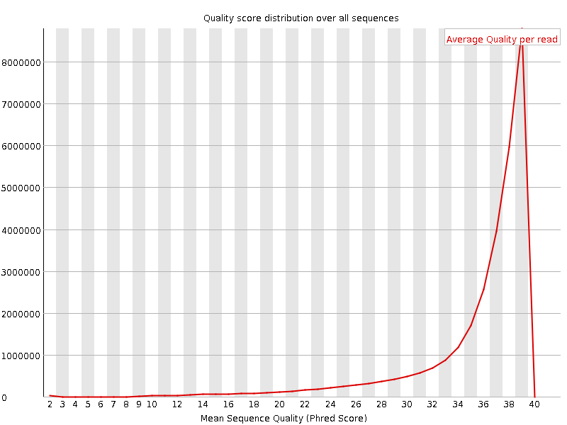
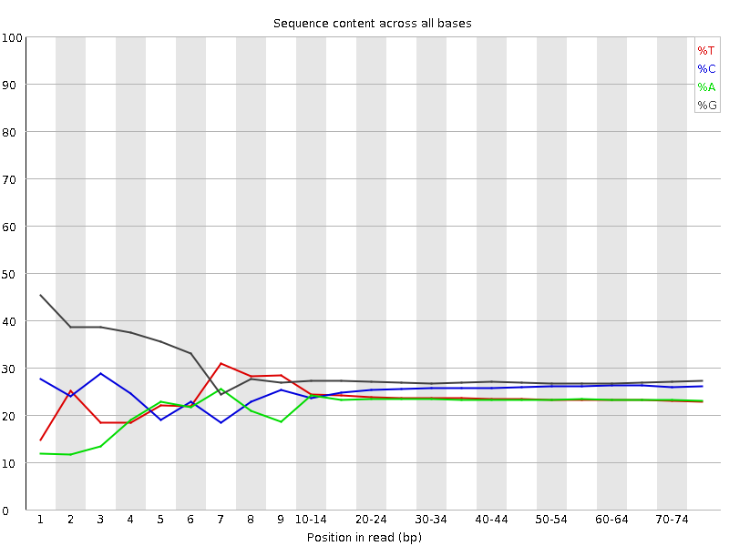
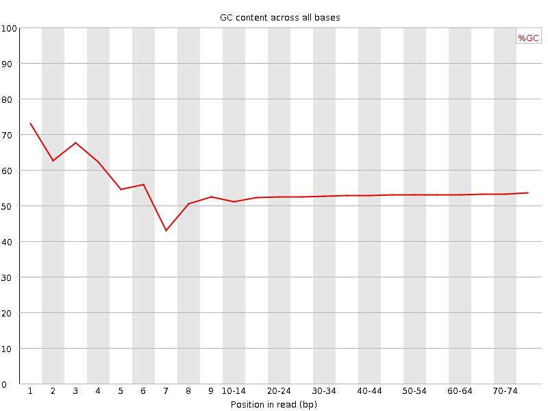
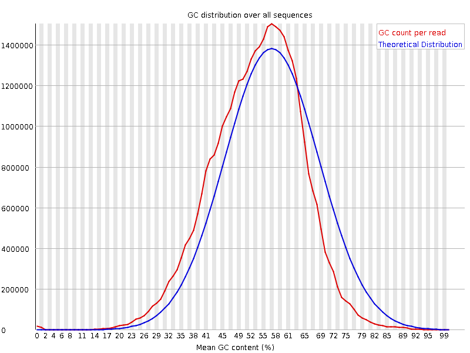
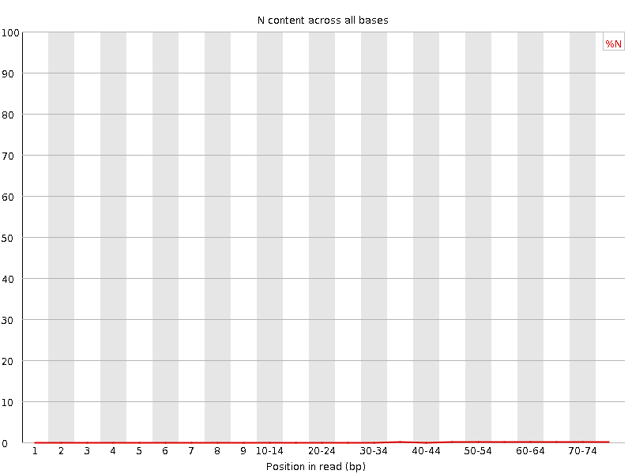
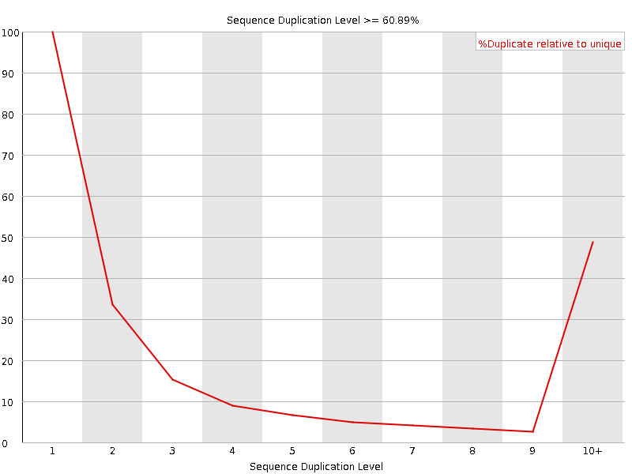
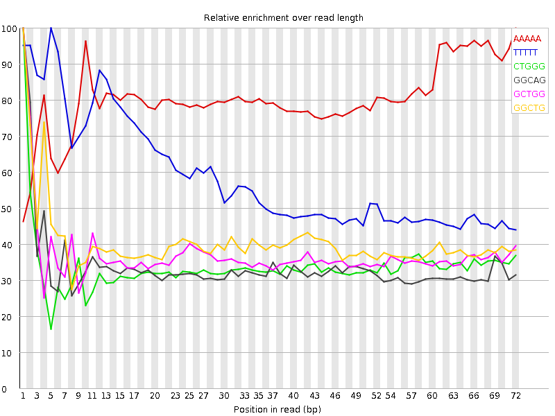

![[OK]](Icons/tick.png) Basic Statistics
Basic Statistics
| Measure | Value |
|---|---|
| Filename | SRR315323_1.fastq |
| File type | Conventional base calls |
| Encoding | Sanger / Illumina 1.9 |
| Total Sequences | 30268824 |
| Filtered Sequences | 0 |
| Sequence length | 76 |
| %GC | 53 |
Per base sequence quality

Per sequence quality scores

![[FAIL]](Icons/error.png) Per base sequence content
Per base sequence content

Per base GC content

![[WARN]](Icons/warning.png) Per sequence GC content
Per sequence GC content

Per base N content

Sequence Length Distribution

Sequence Duplication Levels

Overrepresented sequences
No overrepresented sequences
Kmer Content

| Sequence | Count | Obs/Exp Overall | Obs/Exp Max | Max Obs/Exp Position |
|---|---|---|---|---|
| AAAAA | 6473305 | 4.735417 | 5.893975 | 72 |
| TTTTT | 5159885 | 3.2410247 | 5.5181575 | 5 |
| CTGGG | 6361085 | 2.2209454 | 6.5874376 | 1 |
| GGCAG | 5931665 | 2.135115 | 6.338794 | 1 |
| GCTGG | 6026320 | 2.1040635 | 5.6863003 | 1 |
| GGCTG | 5998025 | 2.0941844 | 5.1843977 | 1 |
| GGGCA | 4977430 | 1.7916361 | 5.4885345 | 1 |
| GGGGG | 6526795 | 1.7592924 | 8.366742 | 1 |
| GGGAG | 5287055 | 1.740086 | 5.433986 | 1 |
| TGGGG | 5358150 | 1.7105421 | 5.300953 | 1 |
| GGGGA | 4650765 | 1.530669 | 7.443257 | 1 |
| GGGGC | 5098620 | 1.5030676 | 5.0173397 | 2 |
| GGGTG | 4428605 | 1.413793 | 5.037834 | 2 |
| GTGGG | 4408735 | 1.4074497 | 6.7505426 | 1 |
| GGGGT | 4118840 | 1.3149033 | 6.320813 | 1 |
| CGGGG | 3350105 | 0.9876072 | 6.8619356 | 1 |